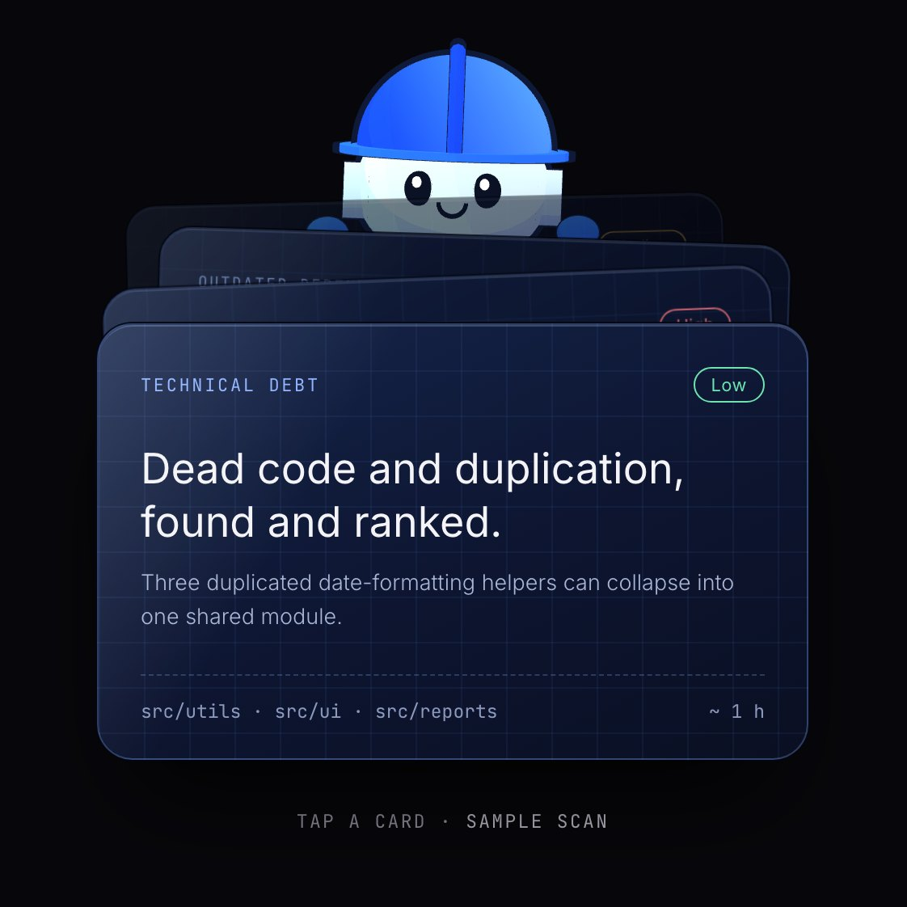
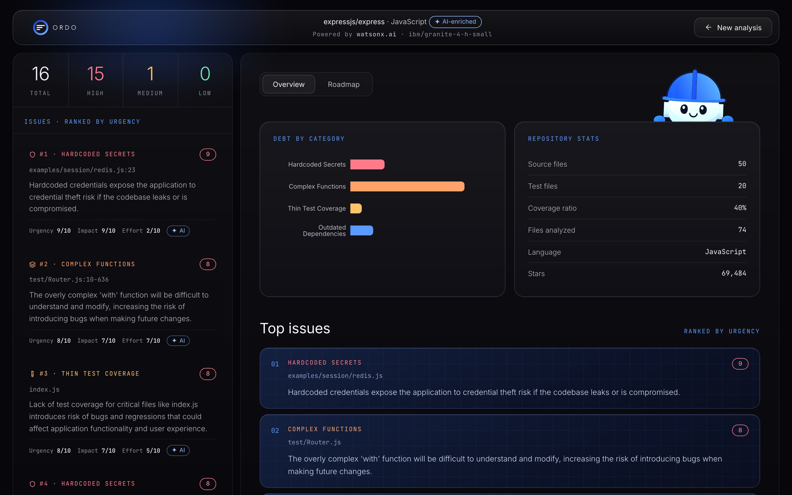
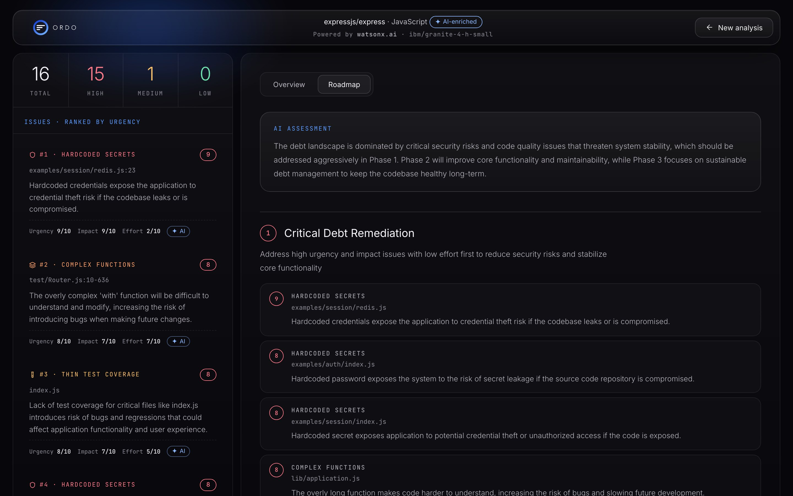
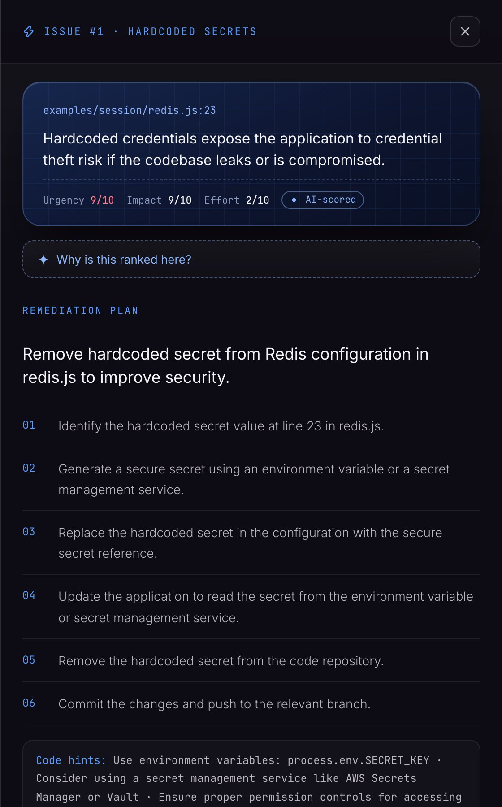
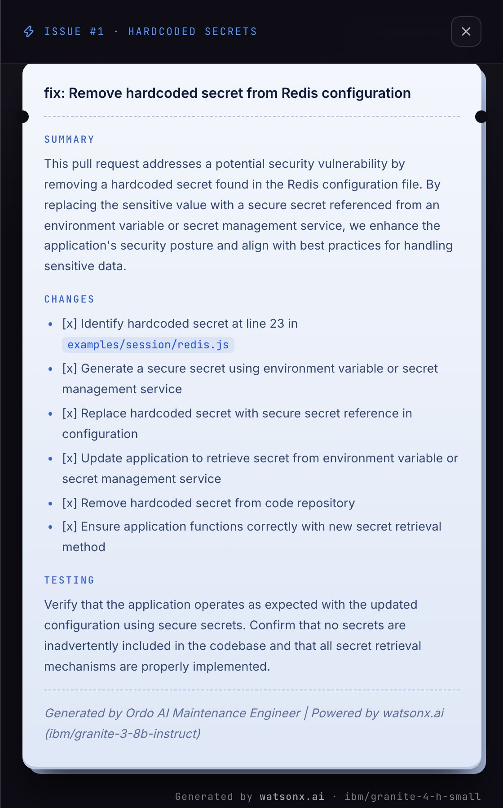
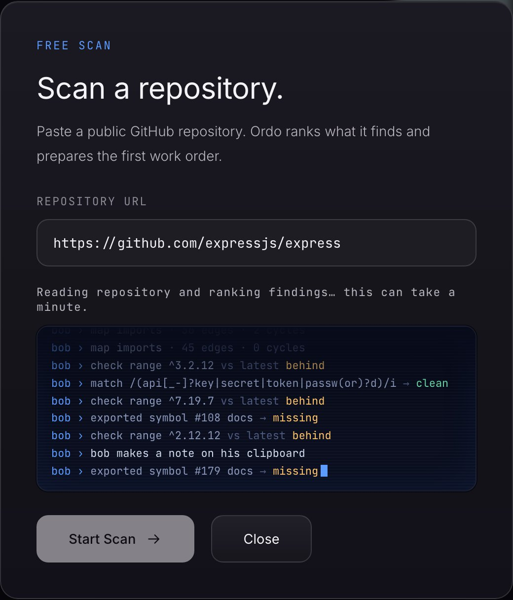

Built on IBM Bob 2.0, Ordo scans a repository, ranks what matters most, and hands the team fix plans, test strategies and pull request summaries.
The problem
Debt accumulates in code no one is looking at. It surfaces as outages, slow delivery or security incidents, when fixing it costs the most.
Scanners and linters produce long lists ranked by rule severity, with no sense of business risk or what to do first.
Engineers get findings they cannot act on: no explanation, no plan, no tests, no pull request. So the list gets ignored.
How it goes today
The gap is not detection. It is prioritization, explanation and a fix path an engineer can pick up and ship.
The solution
Bob reads the repository from GitHub and runs five debt detectors. No cloning, no setup.
Bob scores every finding for urgency, business impact and fix effort, with a plain-English reason.
Bob sequences the ranked list into a three-phase plan the team can schedule.
Bob prepares the fix plan, the test strategy and a pull request summary, ready to implement.
What Bob finds

How Bob prioritizes
Security and reliability risks rise to the top.
Weighs the damage to users, delivery and trust.
Surfaces the quick wins next to the big jobs.
IBM Bob 2.0 runs the analysis and does the ranking. IBM Granite on watsonx.ai assists Bob with scoring and a one-line explanation for each finding. If the model is unavailable, Bob falls back to rule-based scores, so a scan never fails.
Real scan · expressjs/express
| Top finding | Where | Urgency |
|---|---|---|
| Hardcoded secret | examples/session/redis.js | 9 / 10 |
| Complex function | test/Router.js | 8 / 10 |
| Thin test coverage | index.js | 8 / 10 |
The product

The roadmap
Ordo sequences the findings into three phases, from fix-now security and reliability issues to longer-term code quality, with the reasoning written out for each phase.

Deliverables


The experience
Bob, the face of IBM Bob 2.0 inside Ordo, streams the scan as it runs, then hands the team a dashboard. Every finding leaves as a work order, stamped ready for review.

Under the hood
Ordo runs as a custom Bob mode with three skills.
Bob pulls the file tree and key files from GitHub.
Bob checks each debt category against the code.
IBM Granite helps Bob score, explain and write fixes.
Dashboard on the web, chat inside IBM Bob.
Why Ordo
| Typical static-analysis report | Ordo | |
|---|---|---|
| Engine | Static rule set | IBM Bob 2.0, assisted by watsonx.ai |
| Output | A long list of findings | A ranked list and a roadmap |
| Priority | Rule severity | Urgency, business impact and effort |
| Explanation | Rule identifier | Plain-English reasoning per finding |
| Fix path | Left to the engineer | Fix plan, test strategy, PR summary |
| Interface | Report file | Web dashboard and IBM Bob 2.0 chat |
Cut maintenance costs, raise code quality, and stop small issues from becoming production problems.
Automatic pull requests · CI integration · multi-repo view · debt trends over time · IDE plugin